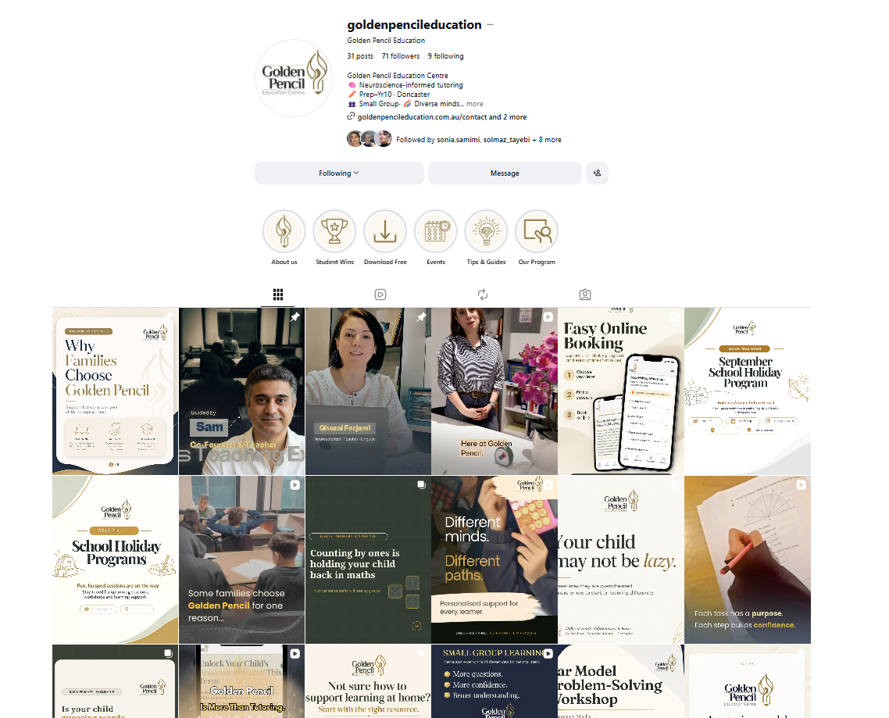
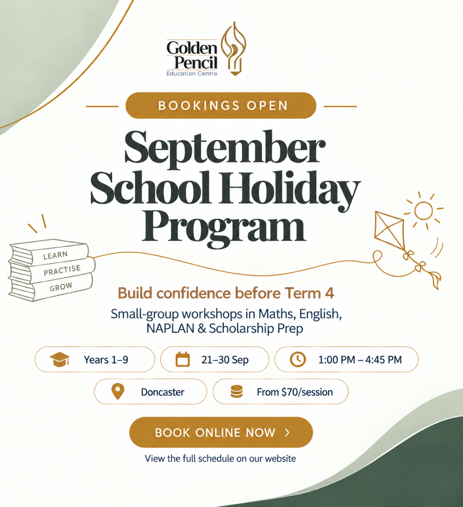
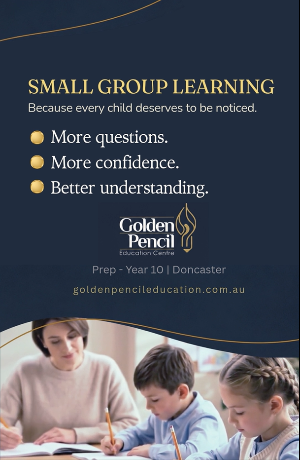
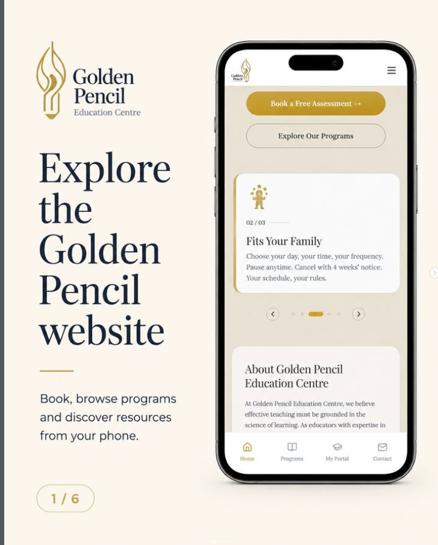
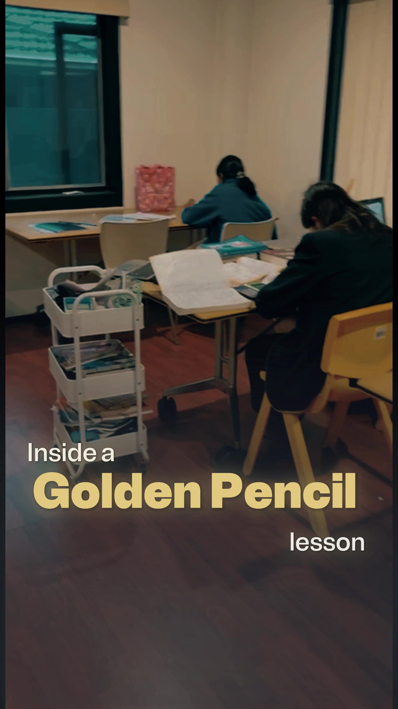

EDUCATION
Golden Pencil Education
Ongoing social media management for a Doncaster tutoring business, turning specialist educational expertise into clear, useful content for families.

SELECTED WORK
Content designed around real parent questions and program moments





THE CHALLENGE
Making specialist education expertise accessible on social media
Golden Pencil offers a distinctive neuroeducation-led approach, but its social content needed to explain programs clearly, support enrolment periods and communicate expertise without becoming overly technical.
THE APPROACH
A content system built around useful information and timely campaigns
Ongoing content combines educational carousels, short-form video, program announcements, booking guidance and seasonal campaigns. The approach keeps the brand informative and approachable while giving parents clear next steps.
- Ongoing Instagram and Facebook content
- Educational carousels and short-form video
- Program and ICAS campaign content
- Booking and website journey content
- Campaign planning around school terms
THE DIRECTION
A clearer, more consistent social presence
The content system gives Golden Pencil a consistent way to communicate its teaching approach, promote programs and respond to the questions families are already asking.
Need a clearer digital presence for your business?
Let’s look at what your business actually needs and build from there.
Start a Conversation